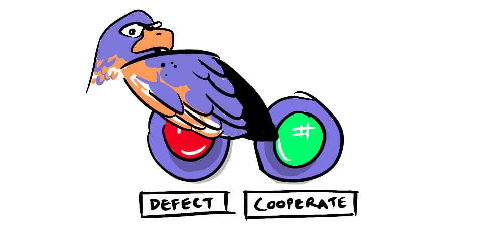
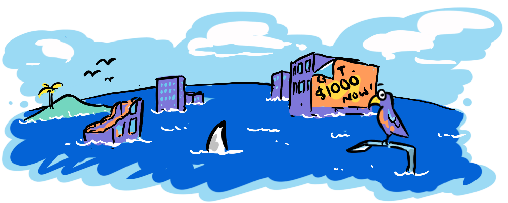

In repeated games I showed how finitely repeated and infinitely repeated games require different strategies, and how humans intuitively deal with games that are "almost" infinite. This post will explore a crucial concept that accounts for how we deal with future uncertainty with a concept that is more mathematically rigorous—the discount factor. We'll see how we can calculate it, its relevance in repeated games, and end by looking at climate change as a repeated game incorporating the discount factor.
Think about the following scenario: you're offered a choice between $1000 today or a year later. You'd certainly take it today. But what about if the offer given for a year later is raised to $1010? Chances are you'd still take the $1000 today, as the upside isn't worth a full year (you'd probably be better off earning interest from a bank).
The discount factor can be interpreted in two ways:
- Present Bias: Factoring in how much more we value rewards today as compared to a fixed time period later.
- Indefinite Ending: Accounting for the probability that a repeated game may end at some time—prompting a shift in strategy.
How can we determine how much more we value payoffs today than a year later? Although an , one way to consider this is the interest rate. The logic here is that we take an offer today as long as it's more than the offer given for a year from now plus interest earned. Thus:
δ = 1 / (1 + r)t
(where r is the interest rate and t is time)
So, if the interest rate r was 10%, the discount factor δ would be 0.91. Multiplying this with the future option, we get the minimum value we would accept today. Thus, $1010 a year later with a 10% interest rate would be worth (1010 * 0.91) = $919.10, significantly lower than the offer of $1000 today.
Here we have been using the interest rate to determine the discount factor, but the discount factor can be anywhere between 0 and 1—it is simply a measure of the player's confidence in future rewards. The more confident the player is, the closer the discount factor will be to 1. In repeated games, the chance of the game ending is a crucial consideration in determining how much confidence (or trust) one player has in the other cooperating, because if the game is about to end a infinite (cooperative) strategy can become sub-optimal and a finite (non-cooperative) strategy may be preferable (via backward induction). The discount factor balances the benefits of cooperation but also its risks.
Both the present bias that human beings have as well as the indefinite nature of a repeating game are accounted for.
To understand why discount factor is important in repeated games, let's use the classic example of an infinitely repeated prisoner's dilemma game with the following matrix:
Let's consider player 1's best case payoff (5) and second best payoff (3). Intuitively, we can see that, if repeated infinitely, both would sum to infinity, despite a clear difference in the payoffs in each stage game. This makes it both mathematically tougher while modeling and fails to account for the practical possibility of the game ending, perhaps drawing on the rather gloomy idea that life itself is finite or, in other interactions that can be modeled as repeated games, simply that the players may stop playing. Thus, by introducing the discount factor, we account for this probability and for the players' preference for rewards today.
Climate change, one of the most pressing issues that the human race is facing, can also be modeled as a repeated game. How does the discount factor and its 2 interpretations come into this? Our war against climate change can be seen as infinitely repeated—it continues until the human race becomes extinct. But there's certainly a chance, no matter how small, that this war ends—a climatic catastrophe suddenly wiping us all out, or gradual global warming making the planet eventually uninhabitable.
As for the other interpretation, differing attitudes of different countries, political administrations and even businesses mean they each have different perceptions of how important future generations are relative to today. Both of these can be factored into this vital game, using the discount factor. A higher discount factor would indicate a greater importance placed on future generations, meaning stronger policies attempting to halt climate change, and vice versa. Let's end, as usual, with some behavioral economic considerations...

The infinitely repeated climate change game is being played out between countries. Viewed in isolation, and from a completely self-interested viewpoint, measures that promote sustainability may not make rational economic sense for policy-makers, meaning their discount factor will be relatively low. However, agreements like the Paris Agreement, in game theoretical terms, are an attempt to the discount factor, by increasing confidence between countries. It is always possible that, if other countries prioritize current growth and don't meet targets, others may reciprocate by not meeting theirs, even though it was possible, merely as a deterrent, creating a downward spiral of mistrust. But all it takes is a few administrations with higher discount factors to set off a chain of reciprocity, before the ultimate title of a social norm is achieved and sustainable practices become commonplace.
Beyond a complicated-looking formula, the discount factor is simply an indication of how much we prioritise the future. When analyzing repeated games, we can now add a practical consideration—differing human attitudes. In repeated games like tackling climate change, this can make all the difference in the outcomes—what's essential is common knowledge. If we know others have a high discount factor (perhaps through clearly articulated stances), this can assure us of mutual cooperation or even impact our own perception of its importance.